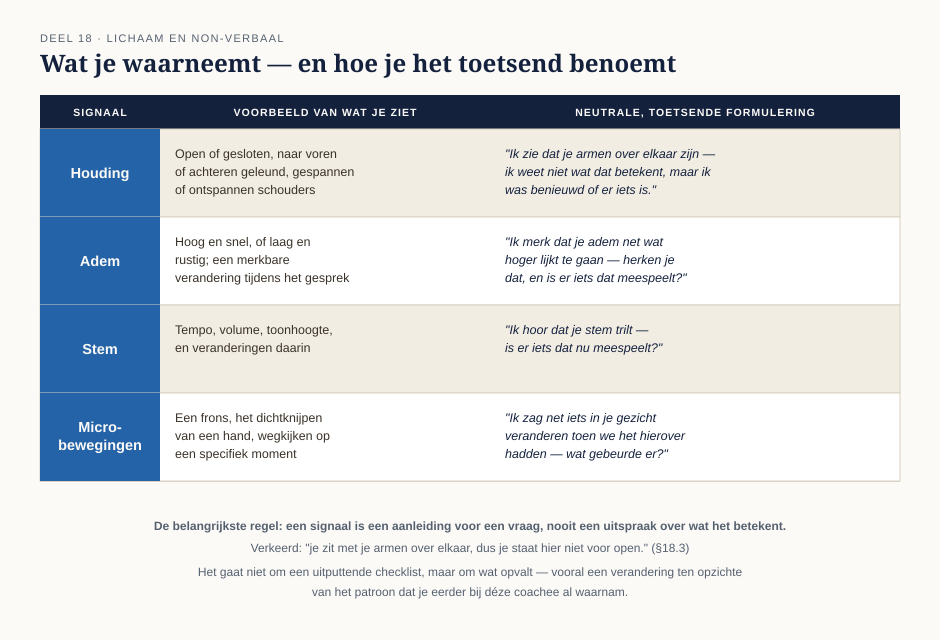

Cursus Coachen · Niveau 2 (NOBCO/EMCC EIA Practitioner · ICF Level 2) · Deel 18 van 30
Lichaam en non-verbaal
Deel 4 introduceerde drie luisterniveaus, met niveau 3 — omgevingsluisteren, inclusief lichaamstaal en toon — als vooruitverwijzing naar dit deel. Dit deel werkt dat niveau volledig uit: wat u waarneemt aan het lichaam, de adem en de beweging van de coachee, en hoe u dat gebruikt zonder te interpreteren als een expert.
7secties
±2u30leestijd + werkboek
3controlevragen
1figuur
Positionering. Deze cursus bereidt voor op twee routes tegelijk — het EMCC Competence Framework (NOBCO/EMCC EIA) en de ICF Core Competencies — en vervangt geen van beide officiële trajecten. Studeer voor een accreditatie of credential altijd óók het bronmateriaal van NOBCO/EMCC of ICF zelf.
Niveau 2: ⑪ Intake en driehoekscontract → ⑫ Traject ontwerpen → ⑬ Oplossingsgericht coachen → ⑭ Cognitieve invalshoek → ⑮ Transactionele analyse → ⑯ Systemisch werken → ⑰ Werken met emoties → ⑱ Lichaam en non-verbaal (hier) → ⑲ Patronen en overtuigingen → ⑳ Weerstand en stagnatie → ㉑ Instrumenten verantwoord inzetten → ㉒ Intervisie en tussenassessment
01
Terug naar niveau 3-luisteren
⏱ 15 min
Deel 4 (niveau 1) introduceerde drie luisterniveaus, met niveau 3 — omgevingsluisteren, inclusief lichaamstaal en toon — als vooruitverwijzing naar dit deel. Dit deel werkt dat niveau volledig uit: wat u waarneemt aan het lichaam, de adem en de beweging van de coachee, en hoe u dat gebruikt zonder te interpreteren als een expert.
Aan het eind van dit deel kunt u:
vier categorieën non-verbale signalen waarnemen: houding, adem, stem, micro-bewegingen;
een waarneming toetsend benoemen zonder haar als vaststaand feit te presenteren;
ademhaling inzetten als subtiel vertragingsmiddel, niet als aparte interventietechniek;
het drieluik claim → status → waarde toepassen op het werken met lichaamstaal.
02
Wat je waarneemt
⏱ 25 min
Houding — open of gesloten, naar voren of naar achteren geleund, gespannen of ontspannen schouders.
Adem — hoog en snel, of laag en rustig; een merkbare verandering in ademhaling op een bepaald moment in het gesprek.
Stem — tempo, volume, toonhoogte, en veranderingen daarin.
Micro-bewegingen — een frons, het dichtknijpen van een hand, wegkijken op een specifiek moment.
Het gaat niet om een uitputtende checklist, maar om iets dat opvalt — vooral een verandering ten opzichte van het patroon dat u eerder in het gesprek al waarnam bij deze specifieke coachee.

Figuur 18-1 — vier categorieën non-verbale signalen, elk met een neutrale, toetsende formulering (§18.2-18.3)
03
De valkuil: interpreteren als feit
⏱ 30 min
De belangrijkste regel in dit deel: een non-verbaal signaal is een aanleiding voor een vraag, nooit een uitspraak over wat het betekent. "Ik zie dat je armen over elkaar zijn" kan tien verschillende dingen betekenen — het kan kou zijn, gewoonte, spanning, of niets bijzonders. Vergelijk dit met spiegelen uit deel 7: beschrijf wat u waarneemt, toets de betekenis, claim hem niet.
Verkeerd: "Je zit met je armen over elkaar, dus je staat hier niet voor open."
Goed: "Ik zie dat je armen over elkaar zijn — ik weet niet wat dat betekent, maar ik was benieuwd of er iets is."
Het hoeft niet letterlijk elke keer die exacte zin te zijn — de kern is de houding erachter (toetsend, niet claimend), niet een vaste formule. Wat als de coachee het signaal ontkent of afwijst? Dat is een legitiem antwoord; ga niet aandringen of het signaal "bewijzen" (zie ook de oordeelloosheid-grens uit deel 2).
Controlevraag
Uit Werkboek deel 18, Opdracht 18.1 — Waarnemen zonder interpreteren
1Herschrijf de volgende interpreterende uitspraken naar een neutrale waarneming plus toetsende vraag: (1) "Je zit onderuitgezakt, dus dit onderwerp interesseert je niet echt." (2) "Je stem trilt, je bent duidelijk heel verdrietig." (3) "Je kijkt steeds naar de klok, je wilt hier blijkbaar snel klaar mee zijn."Toon antwoord
(1) "Ik zie dat je onderuitgezakt zit — ik weet niet wat dat betekent, was je hier al mee bezig of kwam het net?" (2) "Ik hoor dat je stem trilt — is er iets dat nu meespeelt?" (3) "Ik merk dat je een paar keer naar de klok keek — is er iets waar we rekening mee moeten houden qua tijd?" In alle drie de voorbeelden staat de waarneming los van de interpretatie, en laat de vraag de betekenis volledig bij de coachee.
Opdracht 18.3 — geen antwoordsleutel
Werk in duo's. Persoon A vertelt twee minuten over een onderwerp naar keuze, met een bewust (niet overdreven) non-verbaal signaal ingebouwd — bijvoorbeeld een verandering in tempo of houding op een bepaald moment. Persoon B benoemt het waargenomen signaal toetsend, zonder te interpreteren. Bespreek na afloop: voelde de toetsende opmerking van B accuraat, opdringerig, of ergens tussenin? Houd het signaal echt subtiel — te overdreven spelen maakt de oefening kunstmatig.
04
Ademhaling als hulpmiddel
⏱ 15 min
Een korte adempauze — uw eigen adem, of een uitnodiging aan de coachee om even te ademen — kan een gesprek vertragen op een moment dat vertraging nodig is (koppel terug aan deel 17, reguleren). Dit is geen ademhalingsoefening of ontspanningstechniek in de zin van een aparte interventie; het is een subtiel, terloops middel binnen het lopende gesprek.
05
Toepassing: Aisha
⏱ 25 min
Aisha praat vaak opgewekt en snel, terwijl haar lichaam — een licht gespannen houding, een adem die hoger zit dan u zou verwachten bij haar toon — iets anders laat zien. Dit is een schoolvoorbeeld van de kloof tussen wat gezegd wordt en wat waargenomen wordt. Een goede interventie benoemt dat verschil toetsend, zonder de gesproken boodschap te diskwalificeren.
"Je vertelt dit heel luchtig, en ik zie tegelijk dat je schouders wat opgetrokken zijn — herken je dat?"
Dit deel voegt de concrete, waarneembare laag toe aan wat in deel 17 al over Aisha werd besproken (opgewekte toon versus onderliggende spanning). De non-verbale signalen bij haar zijn subtiel, geen theatrale expressie — dat maakt de oefening realistischer, maar ook lastiger.
Controlevraag
Uit Werkboek deel 18, Opdracht 18.2 — Aisha: woord en lichaam naast elkaar
1Beschrijf een kort sessiemoment met Aisha waarin haar woorden ("het gaat prima, echt") en een non-verbaal signaal (bijvoorbeeld ademhaling of houding) uiteenlopen. Formuleer de toetsende opmerking die je zou maken.Toon antwoord
Aisha zegt luchtig "het gaat prima, echt" over een week vol overuren, terwijl haar houding iets naar voren gebogen is en haar adem hoger zit dan eerder in het gesprek. Toetsende opmerking: "Je zegt dat het prima gaat, en ik zie tegelijk dat je wat naar voren zit en je adem net iets hoger lijkt — herken je dat?" De opmerking benoemt beide lagen naast elkaar, zonder de gesproken boodschap ("het gaat prima") te diskwalificeren, en laat de betekenis volledig bij Aisha.
06
Het drieluik: claim → status → waarde
⏱ 15 min
Toegepast op lichaamstaal
Claim — non-verbale signalen geven aanvullende informatie over de innerlijke staat van de coachee, naast wat er verbaal gezegd wordt. Status — dat lichaamstaal iets meegeeft is breed erkend, maar specifieke, universele "vertaaltabellen" (bijvoorbeeld: armen over elkaar = altijd afstand) zijn wetenschappelijk niet houdbaar — betekenis is sterk individueel en contextafhankelijk. Waarde — sterk bruikbaar als aanleiding voor een toetsende vraag, expliciet niet bruikbaar als een vaste interpretatiesleutel.
Controlevraag
Uit Werkboek deel 18, Opdracht 18.4 — Het drieluik toepassen
1Vul voor jezelf, in eigen woorden, het drieluik in voor het werken met non-verbale signalen: (1) Claim, (2) Status, (3) Waarde.Toon antwoord
Model, zoals in §18.6: Claim — een non-verbaal signaal zegt iets over de innerlijke staat, naast wat verbaal wordt gezegd. Status — breed erkend dát lichaamstaal meegeeft, maar geen houdbare universele vertaaltabel voor wát een specifiek signaal betekent. Waarde — bruikbaar als aanleiding voor een toetsende vraag, nooit als vaststaand interpretatiekader.
07
Samenvatting
⏱ 10 min
Niveau 3-luisteren volledig uitgewerkt: houding, adem, stem, micro-bewegingen.
De belangrijkste regel: waarnemen en toetsen, nooit interpreteren als vaststaand feit.
Ademhaling als subtiel vertragingsmiddel, geen aparte interventietechniek.
Bij Aisha maakt het verschil tussen woord en lichaam een sessie vaak concreter dan woorden alleen.
Drieluik: brede erkenning van het belang van lichaamstaal, geen houdbare universele vertaaltabel.
Reflectievragen — geen antwoordsleutel
Welk non-verbaal signaal merkt u van nature het snelst op bij een ander — houding, adem, stem, of iets anders? En wat maakt het voor u lastig om een waarneming puur beschrijvend te houden, zonder er meteen een betekenis aan te geven?
Verder naar deel 19
Deel 19 brengt de vier methodiekinvalshoeken uit deel 13-16 én emotie en lichaam uit deel 17-18 samen rond één centraal begrip: het patroon — herkennen, toetsen en er een klein experiment mee ontwerpen, met Marit als synthesecasus.